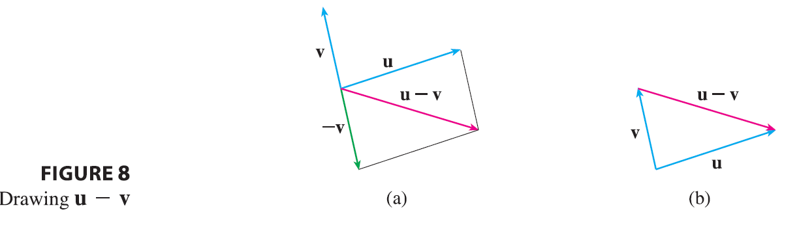
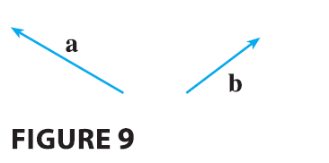

Recall, the vector \(-\mathbf{v} = (-1)\mathbf{v}\) has the same length as v but points in the opposite direction. We call it the negative of v.
By the difference \(\mathbf{u} - \mathbf{v}\) of two vectors we mean \[ \mathbf{u} - \mathbf{v} = \mathbf{u} + (-\mathbf{v}) \]

So we can construct \(\mathbf{u} - \mathbf{v}\) by first drawing the negative of v, \(-\mathbf{v}\), and then adding it to u by the Parallelogram Law as in Figure 8(a). Alternatively, since \(\mathbf{v} + (\mathbf{u} - \mathbf{v}) = \mathbf{u}\), the vector \(\mathbf{u} - \mathbf{v}\), when added to v, gives u. So we could construct \(\mathbf{u} - \mathbf{v}\) as in Figure 8(b) by means of the Triangle Law. Notice that if u and v both start from the same initial point, then \(\mathbf{u} - \mathbf{v}\) connects the tip of v to the tip of u.
EXAMPLE 2 If a and b are the vectors shown in Figure 9, draw \(\mathbf{a} - 2\mathbf{b}\). 